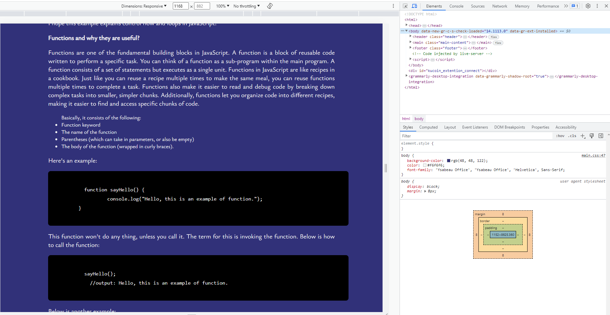

Javascript Fundamentals
JavaScript and its relationship to HTML and CSS
JavaScript, often abbreviated as JS, is a programming language that is one of the core technologies of the World Wide Web. It works alongside HTML and CSS to create content and dynamic interfaces for web browser. If we compares developeing a web site with building a house, then
- An HTML file provides the structure of a web page by arranging different contents into the proper HTML elements or tags such as Head, body, p, img etc. It is kind of like the structure of the house which contains the roof, rooms, and garage etc..
- A CSS file contains the styling of the page. It allows you to change colors, background, font, positioning HTML elements, and more. It is kind of like the design of the house itself. For example, what is color the roof, the positions and sizes of the rooms, and what material is used for the walls.
- Javascript is used to create interactive user interface elements like forms, menus, maps, and other interactive elements. It can also be used to communicate between a client and a server and to control document elements on the page. JavaScript adds behavior and functionality to the page and works with HTML and CSS to make a web page more interactive and interesting. This is kind of like the functionality of the house. For example, we can use the heater to warm up the room, and use the kitchen to cook food.
I hope this simply explains JavaScript and its relationship to HTML and CSS.
Objects vs Arrays
Object
Objects are used to represent a “thing” in your code. That could be a person, a car, a building, a book, a character in a game — basically anything that is made up or can be defined by a set of characteristics. In objects, these characteristics are called properties that consist of a key and a value.
// Basic object syntax
var object = {
key: 'value'
};
// Example 'person' object
var person = {
name: 'John',
age: 52,
rgistered: false
};
Properties or data in objects can be accessed, added, changed ,and removed by using either dot or bracket notation. To get the value of the age key in our personobject with both dot and bracket notation, we'd write:
// Dot notation
person.age
// returns 52
// Bracket notation
person['age']
// returns 52
Say we wanted to change the value of registered to true, we can do that with dot notation like this:
person.registered = true;
And if we wanted to add a new property to our person object, we could accomplish that with dot notation as well:
person.hobbies = ['hiking', 'travel', 'reading'];
Finally, to remove a property from an object, we use the delete keyword like so:
delete person.age;
Array
We use arrays whenever we want to create and store a list of multiple items in a single variable. Arrays are especially useful when creating ordered collections where items in the collection can be accessed by their numerical position in the list. Just as object properties can store values of any primitive data type (as well as an array or another object), so too can arrays consist of strings, numbers, booleans, objects, or even other arrays.
Arrays use zero-based indexing, so the first item in an array has an index of 0, the second item an index of 1, and so on. For instance, let's say we wanted to access the third item ('kiwi fruit') in the following array:
var fruits = ['apple', 'orange', 'kiwi fruit', 'bule berry'];
To do so, we'd write:
fruits[2]; // returns 'kiwi fruit'
Items can be added and removed from the beginning or end of an array using the push(), pop(), unshift(), and shift() methods:
// push() - Adds item(s) to the end of an array
fruits.push('watermelon');
// pop() - Removes the last item from an array
fruits.pop();
// unshift() - Adds item(s) to the beginning of an array
fruits.unshift('pear', 'cherry');
// shift() - Removes the first item from an array
fruits.shift();
Control Flow and Loops
I will explain control flow and loops in JavaScript using an example process from everyday life: making a sandwich.
In JavaScript, control flow refers to the order in which the code is executed. It allows you to control the flow of your program based on certain conditions and make decisions. Loops, on the other hand, are used to repeat a set of instructions multiple times until a certain condition is met.
Below is a sample process of making a sandwich using JavaScript concepts:
// Step 1: Get bread
const hasBread = true;
if (hasBread) {
// Step 2: Get ingredients
const hasCheese = true;
const hasTomato = true;
const hasLettuce = true;
if (hasCheese && hasTomato && hasLettuce) {
// Step 3: Assemble the sandwich
console.log("Assembling the sandwich...");
// Step 4: Apply condiments
console.log("Applying condiments...");
// Step 5: Cut the sandwich
console.log("Cutting the sandwich...");
} else {
console.log("Missing ingredients!");
}
} else {
console.log("No bread available!");
}
In the example, we use control flow structures if statements to make decisions based on certain conditions. We check if we have bread available before moving forward with the sandwich-making process. If there is bread, we proceed to check for the presence of ingredients like cheese, tomato, and lettuce.
If we have all the necessary ingredients, we execute the instructions inside the inner if statement. However, if any of the required ingredients are missing, the code inside the else block of the inner if statement is executed, and a message is printed to the console.
Now, let's introduce loops to make multiple sandwiches:
const sandwichCount = 3;
for (let i = 1; i <= sandwichCount; i++) {
console.log(`Making sandwich ${i}...`);
Repeat the process of making a sandwich in last example.
}
In this example, we introduced a for loop. The loop starts with initializing a variable i to 1. The loop will continue as long as i is less than or equal to the sandwichCount variable, and after each iteration, i is incremented by 1.
By using a loop, we can efficiently repeat a set of instructions without duplicating code, making it easier to handle repetitive tasks like preparing multiple sandwiches.
I hope this example explains control flow and loops in JavaScript!
Functions and why they are useful?
Functions are one of the fundamental building blocks in JavaScript. A function is a block of reusable code written to perform a specific task. You can think of a function as a sub-program within the main program. A function consists of a set of statements but executes as a single unit. Functions in JavaScript are like recipes in a cookbook. Just like you can reuse a recipe multiple times to make the same meal, you can reuse functions multiple times to complete a task. Functions also make it easier to read and debug code by breaking down complex tasks into smaller, simpler chunks. Additionally, functions let you organize code into different recipes, making it easier to find and access specific chunks of code.
-
Basically, it consists of the following:
- Function keyword
- The name of the function
- Parentheses (which can take in parameters, or also be empty)
- The body of the function (wrapped in curly braces).
Here's an example:
function sayHello() {
console.log("Hello, this is an example of function.");
}
This function won't do any thing, unless you call it. The term for this is invoking the function. Below is how to call the function:
sayHello();
//output: Hello, this is an example of function.
Below is another example:
function sum(num1, num2){
return num1 + num2;
}
To invoke this function, we call it like this:
sum(31, 2);
//output: 33
There are a few of different ways to define a function, but we won't discuss them in this blog.
The DOM and DevTools
What is the DOM?
"The W3C Document Object Model (DOM) is a platform and language-neutral interface that allows programs and scripts to dynamically access and update the content, structure, and style of a document."
-
The W3C DOM standard is separated into 3 different parts:
- Core DOM - standard model for all document types
- XML DOM - standard model for XML documents
- HTML DOM - standard model for HTML documents
In this blog, we only discuss about the HTML DOM.
What is the HTML DOM?
-
The HTML DOM is a standard object model and programming interface for HTML. It defines:
- The HTML elements as objects
- The properties of all HTML elements
- The methods to access all HTML elements
- The events for all HTML elements
In other words, the HTML DOM is a standard for how to get, change, add, or delete HTML elements.
The HTML DOM is a tree-like structure.

-
With the HTML DOM, JavaScript gets all the power it needs to create dynamic HTML. It can:
- change all the HTML elements in the page
- change all the HTML attributes in the page
- change all the CSS styles in the page
- remove existing HTML elements and attributes
- add new HTML elements and attributes
- react to all existing HTML events in the page
- create new HTML events in the page
Below is an example changes the content of the
element with id="demo":
document.getElementById("demo").innerHTML = "Hello World!";
In the example above, getElementById is a method, while innerHTML is a property of the selected element.
DevTools
DevTools allows us another wayto access the DOM. DevTools are a set of web developer tools , which assists us with testing and debugging websites and applications. All major browsers include developer tools, which enable developers to examine the code of a web page or app and run tests and evaluate metrics related to that code. Chrome Developer Tools (DevTools for short) is the industry standard.
Pressing F12 would launch the developer tools on most new browsers on a desktop. On chrome, they look something like this:
Navigate each panel by clicking on the tab located on the top of the screen.
-
On Chrome DevTools, here are some of the top features:
- A device preview to test your webpage's responsive design
- A JavaScript debugger to identify and fix bugs
- A network panel to track and analyze page requests
- An inspector tool to make styling changes, such as font, spacing, colors, margins
- A console to identify page errors and warnings
- A performance panel to check your website performance, such as page speed
Using only devtools we were able to identify the root cause and fix for a performance issue in a codebase with which we were not familiar.
-
Here, I have no time to discuss more details on Web Dev Tool, so I provide a few tutorial sites about how to learn Web Dev Tools for begineer.
- Web Development Tutorial: Understanding how to use the Browser Developer Tools
- Your Simple Guide to Chrome DevTools [+ Step-by-Step Instructions]
- The Beginner's Guide to Chrome Developer Tools
- A practical, step-by-step guide to using Chrome's DevTools